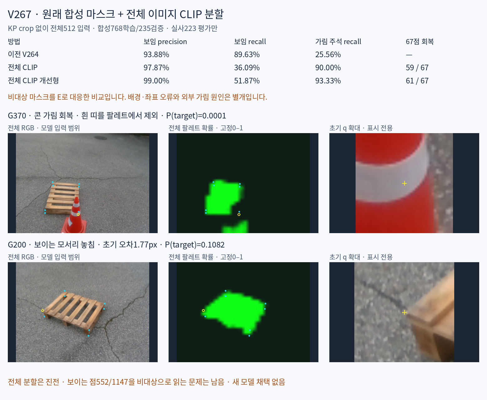

전체 영상에서 콘을 제외하는 분할은 진전했습니다. CLIP 개선형이 V264의 기존 가림 누락67점 중61점을 E로 바꾸고6점은 남겼습니다. 맞히던 E23점의 새 누락은0입니다. 다만 보이는 점1147개 중552개도 비대상으로 읽어 보임 recall은51.87%입니다. 완성된 두 상태 판별기로 채택하지 않았습니다.
모델 입력은 전체 RGB입니다. 원래 합성1003장(학습768/검증235)의 M4만 분할 정답으로 사용했습니다. 내부 진단용440장과 M0는 새 학습에 쓰지 않았습니다. 전체 영상을512×512로 변환하고 분할 지도를 만든 뒤에만 기존 초기 키포인트를 읽었습니다. 아래 확대 crop은 표시 전용입니다.
전체 영상·확률 지도·마스크·확대104사례 · 재현 안내 · 학습 전 동결 조건 · 원래 합성 RGB/M4/예측 대조 · 보임 누락의 경계 진단

출력의 의미: 새 모델이 배운 것은 target/non-target입니다. 현재 점의 비대상을 E에 대응해 기존 human D/E와 비교한 MASK_PRESENCE_PROXY입니다. 비대상은 외부 가림뿐 아니라 배경·초기 좌표 오차·다른 native 대응도 포함할 수 있습니다. 외부 가림 원인을 학습한 별도 분류기가 생긴 것은 아닙니다. 실사 pixel GT가 없으므로 실사 segmentation IoU를 주장하지 않습니다.
표의 행별 열은 D/E/U, 비율은%입니다. D=보임, E=외부가림 주석에 대한 대응, U=입력 불가. 자기 가림은 E로 합치지 않았습니다. PRIMARY1237=D1147/E90에서 새 모델U0이며, 전체1784점의 기존 입력불가45U는 보존했습니다. 과거 실사학습 모델은 historical CAL 학습 이력이 있어 합성 전용 신모델로 부르지 않습니다.
| 방식 | D→D/E/U | E→D/E/U | D P% | D R% | E P% | E R% | E F1% | U% |
|---|---|---|---|---|---|---|---|---|
| 전체 CLIP | 414/733/0 | 9/81/0 | 97.87 | 36.09 | 9.95 | 90.00 | 17.92 | 0.00 |
| 전체 CLIP 개선형 | 595/552/0 | 6/84/0 | 99.00 | 51.87 | 13.21 | 93.33 | 23.14 | 0.00 |
| 이전 V264 | 1028/119/0 | 67/23/0 | 93.88 | 89.63 | 16.20 | 25.56 | 19.83 | 0.00 |
| 이전 v61 | 260/887/0 | 2/88/0 | 99.24 | 22.67 | 9.03 | 97.78 | 16.53 | 0.00 |
| 과거 실사학습 모델 | 655/319/173 | 3/83/4 | 99.54 | 57.11 | 20.65 | 92.22 | 33.74 | 14.31 |
| 방식 | D→D/E/U | E→D/E/U | D P% | D R% | E P% | E R% | E F1% | U% |
|---|---|---|---|---|---|---|---|---|
| 전체 CLIP | 240/376/0 | 4/25/0 | 98.36 | 38.96 | 6.23 | 86.21 | 11.63 | 0.00 |
| 전체 CLIP 개선형 | 307/309/0 | 2/27/0 | 99.35 | 49.84 | 8.04 | 93.10 | 14.79 | 0.00 |
| 이전 V264 | 510/106/0 | 18/11/0 | 96.59 | 82.79 | 9.40 | 37.93 | 15.07 | 0.00 |
| 이전 v61 | 145/471/0 | 0/29/0 | 100.00 | 23.54 | 5.80 | 100.00 | 10.96 | 0.00 |
| 과거 실사학습 모델 | 448/65/103 | 2/23/4 | 99.56 | 72.73 | 26.14 | 79.31 | 39.32 | 16.59 |
| 방식 | D→D/E/U | E→D/E/U | D P% | D R% | E P% | E R% | E F1% | U% |
|---|---|---|---|---|---|---|---|---|
| 전체 CLIP | 174/357/0 | 5/56/0 | 97.21 | 32.77 | 13.56 | 91.80 | 23.63 | 0.00 |
| 전체 CLIP 개선형 | 288/243/0 | 4/57/0 | 98.63 | 54.24 | 19.00 | 93.44 | 31.58 | 0.00 |
| 이전 V264 | 518/13/0 | 49/12/0 | 91.36 | 97.55 | 48.00 | 19.67 | 27.91 | 0.00 |
| 이전 v61 | 115/416/0 | 2/59/0 | 98.29 | 21.66 | 12.42 | 96.72 | 22.01 | 0.00 |
| 과거 실사학습 모델 | 207/254/70 | 1/60/0 | 99.52 | 38.98 | 19.11 | 98.36 | 32.00 | 11.82 |
평가군60행 CSV · 자기 가림 응답 · 1784점 결과 · 외부 가림90점 전이
G370의 콘 흰 띠와 G908의 큰 콘 몸체를 마스크에서 제외합니다. G1515도 이전 crop-분할 모델의 새 누락에서 E로 돌아왔습니다. G370에는 콘 받침 일부를 팔레트로 표시하는 잔여 오류가 있습니다. G996은 사용자 시각 판단과 기존 E 주석이 다른 사례라 원 주석을 유지하고 명백한 성공 근거로 단정하지 않습니다.
개선형이 D로 선택한601점 중595점은 human D,6점은 E여서 D precision99.00%입니다. 그러나 실제 D1147점 중595점만 남습니다. 이는 같은 동결0.5 기준의 결과이며 새 confidence 게이트를 적합하거나 채택한 것이 아닙니다. 가림 정밀도13.21%와 보임 recall51.87%를 함께 봐야 합니다.
수동 보임점 중 초기 좌표 오차≤3px인376점에서도182점이 비대상입니다. 위치 오차만으로 전체 실패를 설명할 수 없습니다.32×32 분할의 경계 정밀도, 팔레트 영역과 의미상 보이는 코너의 차이, 일부 분할 전이 실패를 실제 영상과 경계 거리로 나눠 진단합니다. 실사 pixel GT가 없으므로 경계 가까움 자체를 원인 확정으로 쓰지 않습니다.
일반 CLIP ViT-B/16과 공식 CLIP Surgery의 영상 구조 변경(V–V attention/dual path)을 동결하고 같은26721개 파라미터 mask head만 학습했습니다. 두 방식은 같은 일반 사전학습 가중치·초기값·배치·1000업데이트를 사용합니다. 개선형은 architecture surgery + M4 지도 학습이며 텍스트 feature surgery나 전체 zero-shot CLIP Surgery를 실행한 것은 아닙니다. 공식 방법·코드
M4>127을 전체512로 변환한 뒤 patch16 평균으로32×32 soft target을 만듭니다. 손실은 학습 마스크에서만 정한 class-balanced BCE+soft Dice입니다. q/native/pose/기존 가림 점수는 head 입력에 없습니다. 체크포인트는 final1000 둘을 먼저 동결했고 DEV/실사 성능으로 바꾸지 않았습니다.
전체 일반 CLIP↔개선형의 차이는 같은 조건에서 영상 구조의 차이입니다. V264/v61 등과의 차이에는 입력 범위·기반 특징·감독·학습 자료도 달라지므로 모든 개선을 전체 영상 하나의 인과 효과로 단정하지 않습니다. 실사223장은 반복 개발 평가이며 새 학습·통계·문턱·체크포인트 적합에 쓰지 않았습니다. 독립 블라인드 검증은 아닙니다.
다음은32×32 full-frame fractional target 기준의 합성 DEV235장 결과입니다. 원해상도 M4 기준 및 원본 RGB/GT/예측은 별도 진단에 제공합니다.
| 방식 | micro IoU% | 평균 영상 IoU% | micro Dice% |
|---|---|---|---|
| PLAIN_CLIP | 64.44 | 54.23 | 78.38 |
| CLIP_SURGERY_ARCH | 64.14 | 55.18 | 78.15 |
원래 합성 전체 RGB와 M4 정답 비교 · 원본1003 데이터 감사 · 마스크 변환·학습 분할
전체 영상 범위 독립 검토 · 마스크 학습 독립 검토 · 60행 독립 검산 · CPU mask head/1784점 재현 · 지표6파일 바이트 재현 · HTML 구현 오류 수정 기록
첫 입력 감사에서 JPEG decoder 차이를 원래 MLPY 환경으로 해결했고, 평가 HTML append 오류는 표시 코드만 수정했습니다. 원본 실패 기록을 보존했으며 모델·수치·문턱·주석은 바꾸지 않았습니다. 새 head fit2회/총2000업데이트, backbone 학습·실사 적합·새 PnP·사후 threshold 조정0입니다. 이 고정 비교 뒤 추가 fit은 진행하지 않았습니다.